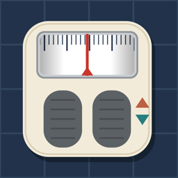

翌朝の上下が分かる体重記録
前の日の印と、次の朝の体重をならべる体重の記録。iPhone と iPad のアプリです。
その日にしたことに「外食」「お酒」「しょっぱい物」「夜おそい食事」「寝不足」「よく歩いた」などの印を付けておくと、その朝と次の朝の体重の差を印ごとに集めて、「外食の翌朝 平均 +0.4 kg（12回）」「印のない日 ±0.0 kg」のように棒でならべます。体重は、昔の体重計の窓のような数字の帯を指で回して 0.1 kg ずつ合わせて入れます（キーボードを出しません）。
- 印は足す・名前を直す・並べ替える・消すができます。印を押すと、その印の日の一覧（その朝・次の朝・差）が出ます
- グラフは、毎朝の体重を小さな点、7日ならした線を太い線で出します。「先週より」はならし線でくらべます
- 前の日を直す・忘れた日をあとから入れることができます。目標の体重をグラフに点線で出せます
- CSV で書き出せます
- 記録の並びの目安です。原因を調べたり、体の状態を判定したりするものではありません
- 登録・課金はありません。記録はこの端末の中だけに保存します。画面のいちばん下に小さな広告が出ます（画面いっぱいの広告・動画の広告は出さず、広告の音は消しています）